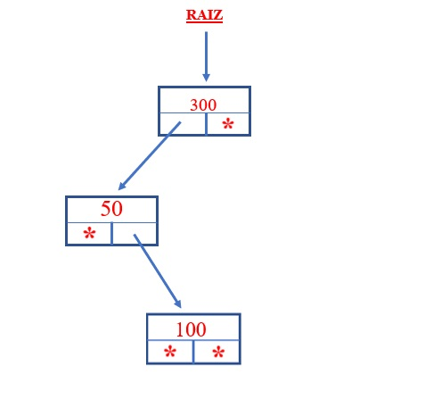

1. Se inicia el arbol vacio, es decir raíz apunta a null:
2. Insertamos un valor ejemplo 300
3. Insertamos el valor 50. Debemos analizar si raíz es distinto a
null verificamos si 50 es mayor o menor a la información del nodo
apuntado por raíz, en este caso es menor y como el subárbol izquierdo
es null debemos insertarlo allí.
4. Insertamos el 50. Hay que tener en cuenta que siempre comenzamos las
comparaciones a partir de raíz. El 100 es menor que 300, descendemos por
el subárbol izquierdo. Luego analizamos y vemos que el 100 es mayor a 50,
debemos avanzar por derecha. Como el subárbol derecho es null lo insertamos
en dicha posición.

5 Insertamos el 400 y el árbol será:
Como podemos observar si cada vez que insertamos un nodo repetamos este algoritmo
siempre estaremos en presencia de un árbol binario ordenado.